id Data Longitude Latitude
1 Rodney 110.2826333 -79.11553 37.27055
2 Rodney 2.4761741 -76.32820 36.63914
3 Rodney 7.7068103 -78.89888 35.93974
4 Rodney -0.7685349 -78.09460 36.21534
5 Rodney -0.5731067 -76.58786 37.74505
6 Sarah 1.3030795 -78.80871 37.10306
7 Sarah 22.9908505 -78.34663 35.55780
8 Sarah 43.1927189 -78.10432 37.61319
9 Sarah 47.3939858 -78.45030 37.00163
10 Sarah 58.7037065 -78.31963 36.55573Vector Data
Rodney Dyer, PhD
Learning Objectives
This section covers the following topics:
Creation of
sf::LINESTRINGandsf::MULTIPOLYGONobjects from raw data.Loading map polygons from
get_data()Importing data from ESRI shapefile.
Implementing Spatial Joins.
Lines
Data Sources: De novo Creation
It is possible to make data from scratch by entering coordinates directly.
Data Sources: De novo Creation
To Make to sf as POINT objects as normal.
Simple feature collection with 10 features and 2 fields
Geometry type: POINT
Dimension: XY
Bounding box: xmin: -79.11553 ymin: 35.5578 xmax: -76.3282 ymax: 37.74505
Geodetic CRS: WGS 84
id Data geometry
1 Rodney 110.2826333 POINT (-79.11553 37.27055)
2 Rodney 2.4761741 POINT (-76.3282 36.63914)
3 Rodney 7.7068103 POINT (-78.89888 35.93974)
4 Rodney -0.7685349 POINT (-78.0946 36.21534)
5 Rodney -0.5731067 POINT (-76.58786 37.74505)
6 Sarah 1.3030795 POINT (-78.80871 37.10306)
7 Sarah 22.9908505 POINT (-78.34663 35.5578)
8 Sarah 43.1927189 POINT (-78.10432 37.61319)
9 Sarah 47.3939858 POINT (-78.4503 37.00163)
10 Sarah 58.7037065 POINT (-78.31963 36.55573)Plotting Points
Data Sources: De novo Creation
To make sf as LINESTRING we can group by the id value and then we need to summarize the Data component, then cast it to a Linestring.
Simple feature collection with 2 features and 2 fields
Geometry type: LINESTRING
Dimension: XY
Bounding box: xmin: -79.11553 ymin: 35.5578 xmax: -76.3282 ymax: 37.74505
Geodetic CRS: WGS 84
# A tibble: 2 × 3
id Data geometry
<chr> <dbl> <LINESTRING [°]>
1 Rodney 23.8 (-78.89888 35.93974, -78.0946 36.21534, -76.58786 37.74505, -79.…
2 Sarah 34.7 (-78.34663 35.5578, -78.31963 36.55573, -78.4503 37.00163, -78.8…Visualizing Line Objects
Operations on LINESTRING Objects
Physical length of the LINESTRING objects
Textual Versions of geometry
While it is easy to go from text \(\to\) POLYGON, the same thing can be done going in the opposite direction.
Polygons
Polygons
Polygons are simply lines whose first and last coordinate are exactly the same
id Data Longitude Latitude
1 Rodney 110.2826333 -79.11553 37.27055
2 Rodney 2.4761741 -76.32820 36.63914
3 Rodney 7.7068103 -78.89888 35.93974
4 Rodney -0.7685349 -78.09460 36.21534
5 Rodney -0.5731067 -76.58786 37.74505
1.1 Rodney 110.2826333 -79.11553 37.27055
6 Sarah 1.3030795 -78.80871 37.10306
7 Sarah 22.9908505 -78.34663 35.55780
8 Sarah 43.1927189 -78.10432 37.61319
9 Sarah 47.3939858 -78.45030 37.00163
10 Sarah 58.7037065 -78.31963 36.55573
6.1 Sarah 1.3030795 -78.80871 37.10306Polygon de novo Creation
Simple feature collection with 2 features and 2 fields
Geometry type: POLYGON
Dimension: XY
Bounding box: xmin: -79.11553 ymin: 35.5578 xmax: -76.3282 ymax: 37.74505
Geodetic CRS: WGS 84
# A tibble: 2 × 3
id Data geometry
<chr> <dbl> <POLYGON [°]>
1 Rodney 23.8 ((-78.89888 35.93974, -78.0946 36.21534, -76.58786 37.74505, -79…
2 Sarah 34.7 ((-78.34663 35.5578, -78.31963 36.55573, -78.4503 37.00163, -78.…Visualizing Polygon Objects
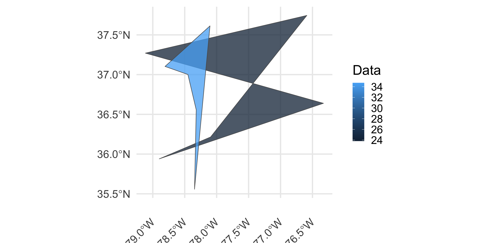
Polygons From Data Frames
Longitude Latitude group County
1 -75.27519 38.03867 1 accomack
2 -75.21790 38.02721 1 accomack
3 -75.21790 38.02721 1 accomack
4 -75.24655 37.99283 1 accomack
5 -75.30384 37.94127 1 accomack
6 -75.31530 37.92981 1 accomack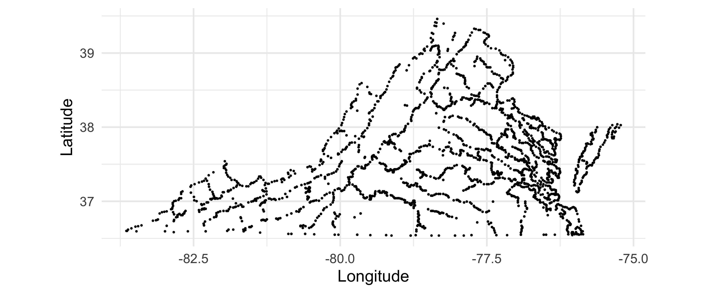
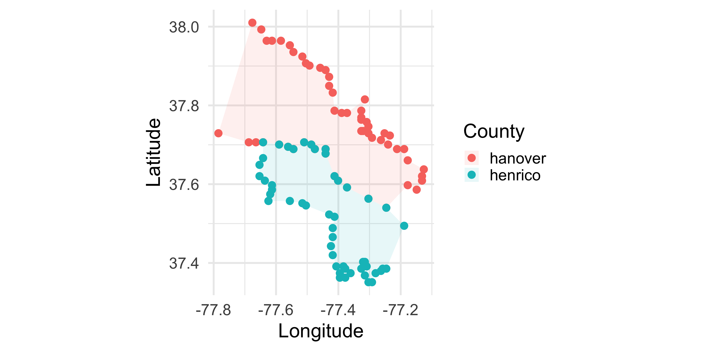
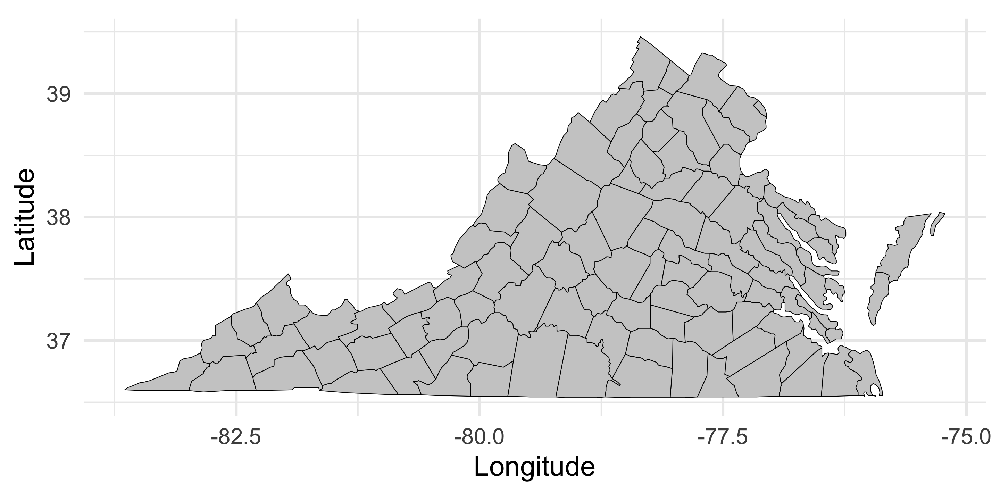
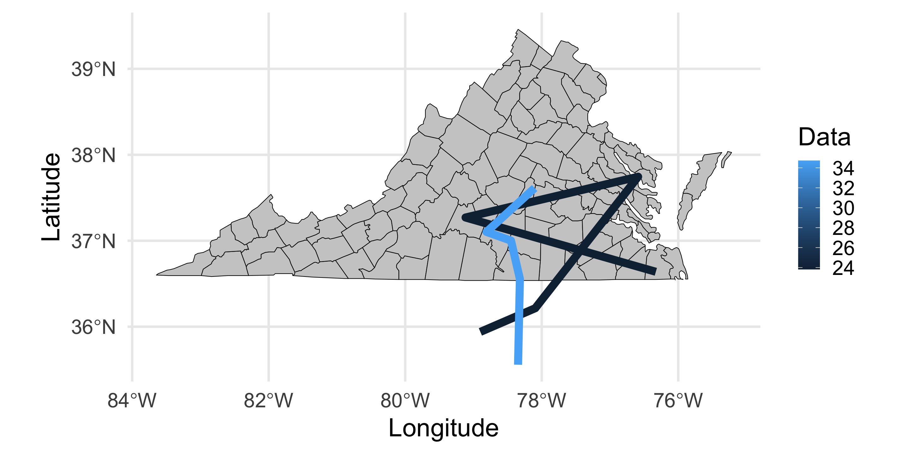
Shapefiles 🤷
Shapefiles
The ESRI Shapefile is a non-standardized format for packaging vector based data (POINT, LINESTRING, POLYGON, etc.).
However, it is not actually a file but it is a collection of files, which may (or may not) expand directly in the folder or within a subfolder.

Archived ZIP Files.
I’ve uploaded some shapefiles to the Github Repository for this class. These are from the Richmond City GIS Department and represent the centerlines of roads in the city as well as the zoning districts.
Here are the URL’s for both of these files.
Downloading Files Using R
You can use your browser and copy and paste those addresses in to download the files to your computer. Then you’ll have to move those archives to your PROJECT FOLDER (you are using Projects right?).
Unziping Files
You can open your computer finder and have the OS unzip the archives.
OR
You can have R do it.
File Components
The Projection File

Loading A Shapefile
You can load it in using sf::st_read() and passing it the .shp file path to it.
Reading layer `Zoning_Districts' from data source
`/Users/rodney/Courses/Modules/Shapefiles/Zoning_Districts.shp'
using driver `ESRI Shapefile'
Simple feature collection with 634 features and 14 fields
Geometry type: MULTIPOLYGON
Dimension: XY
Bounding box: xmin: 11743500 ymin: 3687944 xmax: 11806060 ymax: 3744741
Projected CRS: NAD83 / Virginia South (ftUS)Shapefiles Convert to sf Objects
By default, the data associated with a vector object are put into a data.frame and the geometry object is properly created.
Simple feature collection with 2 features and 14 fields
Geometry type: MULTIPOLYGON
Dimension: XY
Bounding box: xmin: 11773600 ymin: 3730159 xmax: 11789510 ymax: 3731016
Projected CRS: NAD83 / Virginia South (ftUS)
OBJECTID Name Ordinance OrdinanceP Conditiona AdoptionDa Comment
1 1 RO-2 <NA> <NA> No 2000-01-01 <NA>
2 2 B-2 <NA> <NA> No 2000-01-01 <NA>
CreatedBy CreatedDat EditBy EditDate
1 richard.morton_cor 2020-08-24 richard.morton_cor 2020-08-24
2 richard.morton_cor 2020-08-24 richard.morton_cor 2020-08-24
GlobalID Shape__Are Shape__Len
1 334799f0-fe38-46bf-97c2-260f5a036559 60150.29 983.6815
2 558df9cd-4f9c-4248-a689-bc2d9c79d060 56987.01 971.8832
geometry
1 MULTIPOLYGON (((11773598 37...
2 MULTIPOLYGON (((11789222 37...Simplifying Data
Simplifying Data
Simple feature collection with 1 feature and 7 fields
Geometry type: MULTIPOLYGON
Dimension: XY
Bounding box: xmin: 11773600 ymin: 3730159 xmax: 11773940 ymax: 3730493
Projected CRS: NAD83 / Virginia South (ftUS)
OBJECTID Name Ordinance OrdinanceP Conditiona AdoptionDa
1 1 RO-2 <NA> <NA> No 2000-01-01
GlobalID geometry
1 334799f0-fe38-46bf-97c2-260f5a036559 MULTIPOLYGON (((11773598 37...District Codes
[1] "B-1" "B-2" "B-3" "B-4" "B-5" "B-6" "B-7"
[8] "CM" "DCC" "I" "M-1" "M-2" "OS" "R-1"
[15] "R-2" "R-3" "R-4" "R-43" "R-48" "R-5" "R-53"
[22] "R-6" "R-63" "R-7" "R-73" "R-8" "R-MH" "RF-1"
[29] "RF-2" "RO-1" "RO-2" "RO-3" "RO2-PE2" "RO2-PE4" "RP"
[36] "TOD-1" "UB" "UB-2" "UB-PE2" "UB-PE3" "UB-PE4" "UB-PE5"
[43] "UB-PE6" "UB-PE7" "UB-PE8" "UB-PO1" "UB-PO2" "UB-PO3" "UB-PO4"
[50] "UB2-PE8"Visualizing
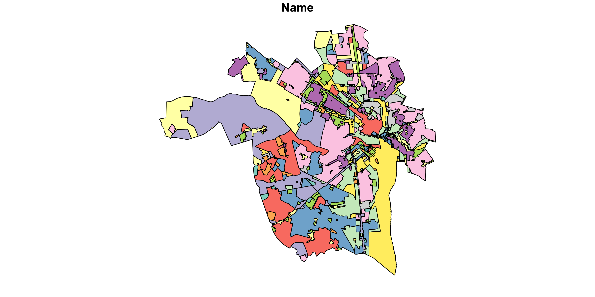
Visualizing Overlays
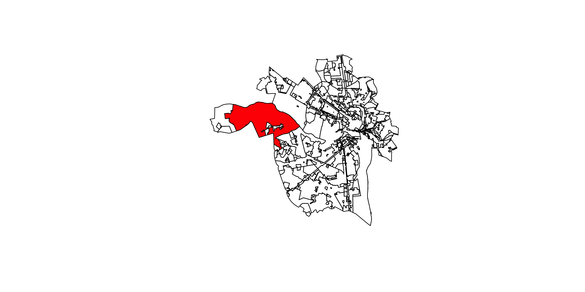
Vector Operations
Spatial Joins
In the topic covering [Relational Operations], we used Primary and Foreign Keys to join data.frame objects and combine data. We can do simliar operations using geospatial positions to perform spatial joins.
There are a wide variety of operations available:
Secondary Vector Data Set
Reading layer `tran_Carriageway' from data source
`/Users/rodney/Courses/Modules/Shapefiles/Centerlines-shp/tran_Carriageway.shp'
using driver `ESRI Shapefile'
Simple feature collection with 29081 features and 25 fields
Geometry type: LINESTRING
Dimension: XY
Bounding box: xmin: 11734060 ymin: 3682790 xmax: 11817490 ymax: 3751927
Projected CRS: NAD83 / Virginia South (ftUS) [1] "FID" "Carriagewa" "AssetID" "StreetType" "Functional"
[6] "FIPS" "LeftFromAd" "LeftToAddr" "RightFromA" "RightToAdd"
[11] "PrefixDire" "ProperName" "SuffixType" "SuffixDire" "FullName"
[16] "RouteName" "OneWay" "PostedSpee" "CADRouteSp" "CreatedBy"
[21] "CreatedDat" "EditBy" "EditDate" "GlobalID" "SHAPE_Leng"
[26] "geometry" Check Projections
Dyer’s First Rule: Make Sure Projections Are the Same
Data Cleanup
FullName OneWay StreetType SpeedLimit
Length :29081 1 : 2 Alley : 3139 Min. : 0.00
N.unique : 4081 FT : 3225 Artery : 5201 1st Qu.:25.00
N.blank : 0 TF : 3148 Highway : 384 Median :25.00
Min.nchar: 3 NAs:22706 Highway Interchange: 93 Mean :25.17
Max.nchar: 46 Private : 1540 3rd Qu.:25.00
NAs : 4526 Ramp : 378 Max. :55.00
Secondary :18346 NAs :7959
Length geometry
Min. : 2.943 LINESTRING :29081
1st Qu.: 164.849 epsg:2284 : 0
Median : 292.517 +proj=lcc ...: 0
Mean : 379.338
3rd Qu.: 461.146
Max. :17851.326
Visualizing: Filter Highways & Plot
FullName OneWay StreetType SpeedLimit
Length :855 1 : 0 Alley : 0 Min. : 0.00
N.unique :170 FT :416 Artery : 0 1st Qu.:25.00
N.blank : 0 TF :408 Highway :384 Median :25.00
Min.nchar: 3 NAs: 31 Highway Interchange: 93 Mean :36.19
Max.nchar: 46 Private : 0 3rd Qu.:55.00
NAs : 18 Ramp :378 Max. :55.00
Secondary : 0 NAs :131
Length geometry
Min. : 14.46 LINESTRING :855
1st Qu.: 276.48 epsg:2284 : 0
Median : 726.13 +proj=lcc ...: 0
Mean : 1055.15
3rd Qu.: 1170.35
Max. :17851.33
Plot It
Let’s color this based upon SpeedLimit
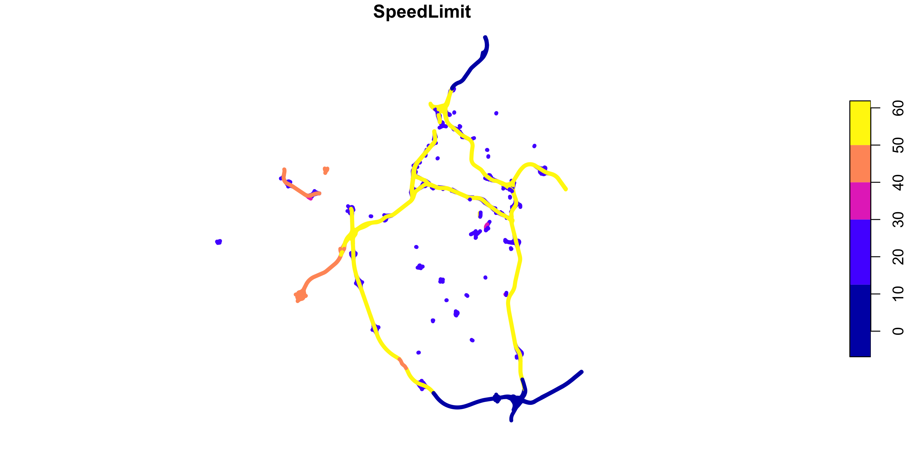
Visualizing A Single Entity
Intersection Plotting
Let’s grab a bit of zoning from The Fan
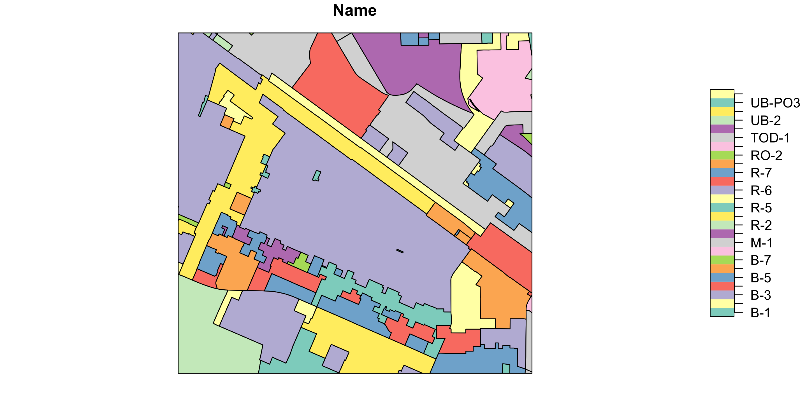
Add Auxillary Data
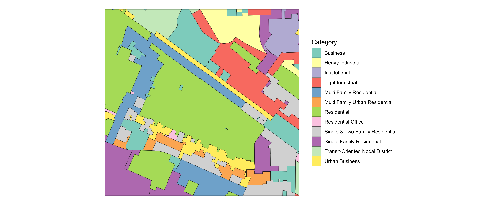
Cropping Roads
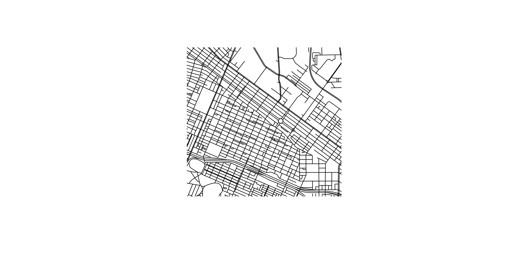
Selecting a Single Zone
Add an attribute to the POLYGON’s indicating if the district is that big one in the middle of the plot. Let’s plot it to see what the ID is.
Plot it
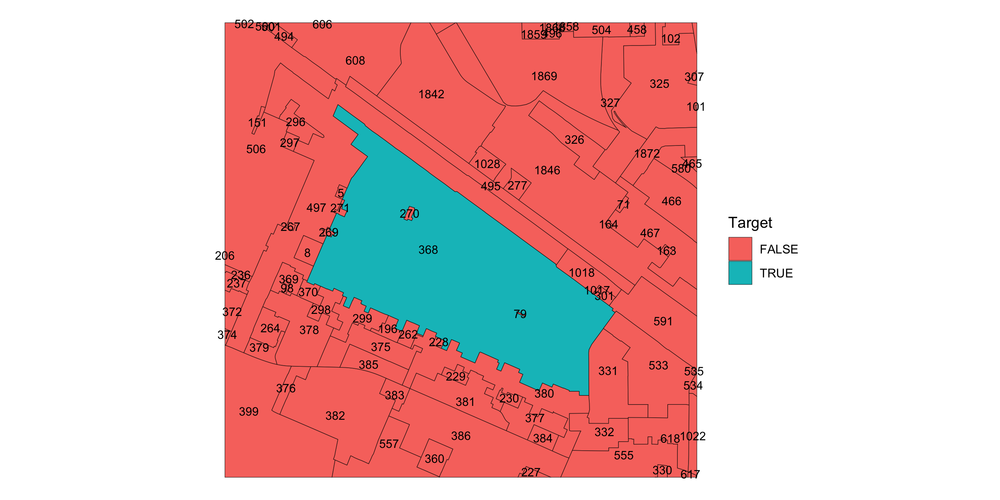
Isolate the District
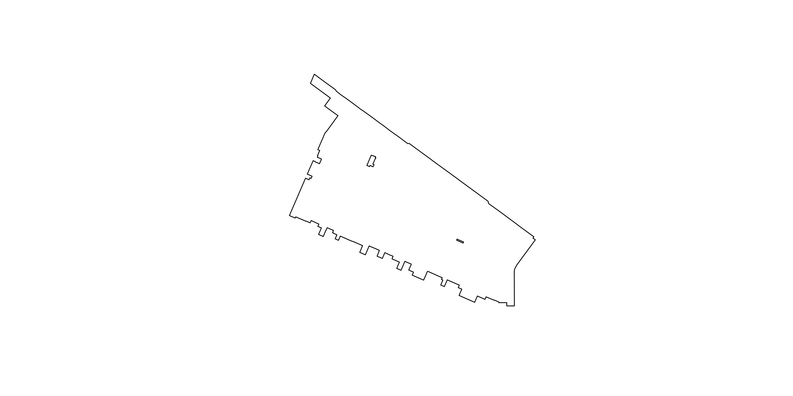
# A tibble: 39 × 1
`Street Name`
<chr>
1 Allison St
2 Birch St
3 Boyd St
4 Floyd Ave
5 Grove Ave
6 Hanover Ave
7 Kensington Ave
8 Lombardy Pl
9 Madumbie Lane
10 Monument Ave
# ℹ 29 more rows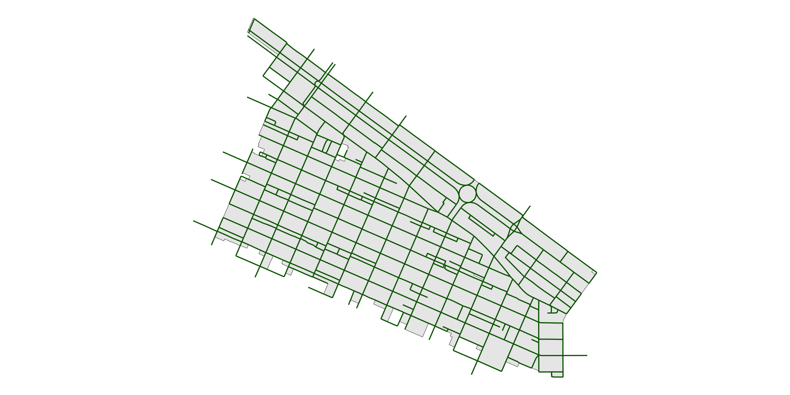